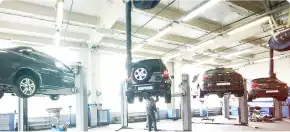

Справжні професіонали на ринку стартерів та
генераторів

Мережа СТЦ
Ремонт стартерів,
генераторів, кондиціонерів
Інтернет-магазин
Понад 15 000 позицій
агрегатів та компонентів
Готові рішення
Готові рішення
в стар-ген сегменті для СТО
У нас представлений широкий асортимент запчастин та комплектуючих для
вантажних та легкових авто, сільськогосподарських машин, водомоторної
техніки, а також мотоциклів та промислового сектору ринку.